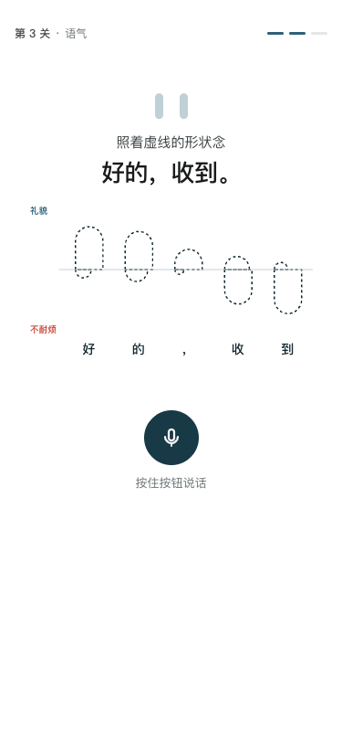
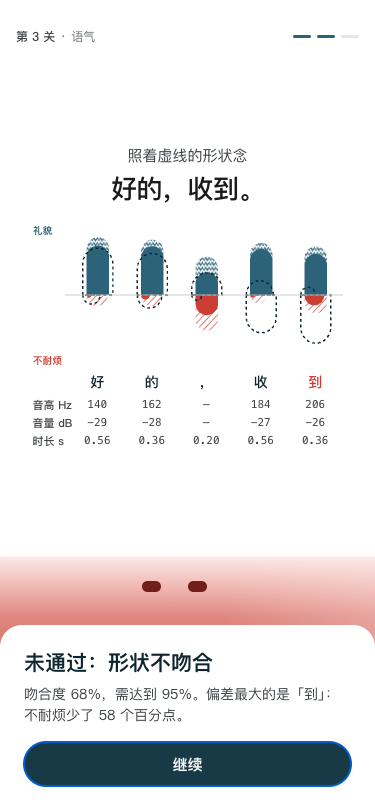
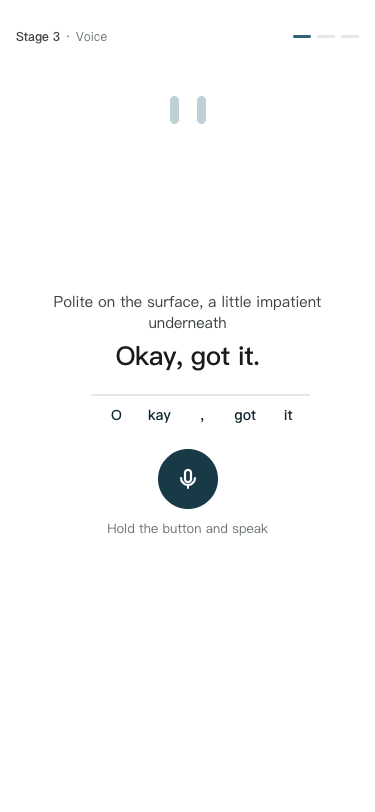

待录时可以先看语气、读句子，再按住话筒。录音键留在手指下面，顶部的眼睛向下沉，和升起的光场相遇。
试用第三关


页面沿用 S2 的顶栏尺寸、三段进度条和眼睛位置。主句收至 26px。第一轮待录只露出五个分段和中线，开口后显示双向柱、两侧语气含义和采集轨道，判定后再显示三行读数。
第二轮让光场退回去，给虚线目标留出白底。三关仍有一处有意保留的差异：S3 的五段中线没有 S1 圆环和 S2 卡片那样的视觉重量，第二轮的图形也比第一轮占更多空间，因为需要对照它朗读。
截图取自本地 Chrome，视口 375 × 812。两轮截图使用模拟语音帧，另用虚拟麦克风通过页面按钮实测两轮按住、松手与重试，也测了键盘短按复位。S3 检查期间没有控制台报错。真实手机和真人收音尚未验证。
页面实现仅修改 stage3.html，沿用已有文案和判定逻辑。截图与本报告都在 briefs/ref/out/align/，点击图片可看原图。